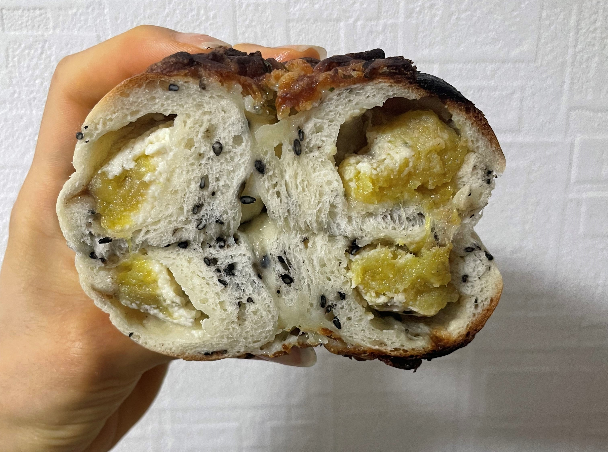
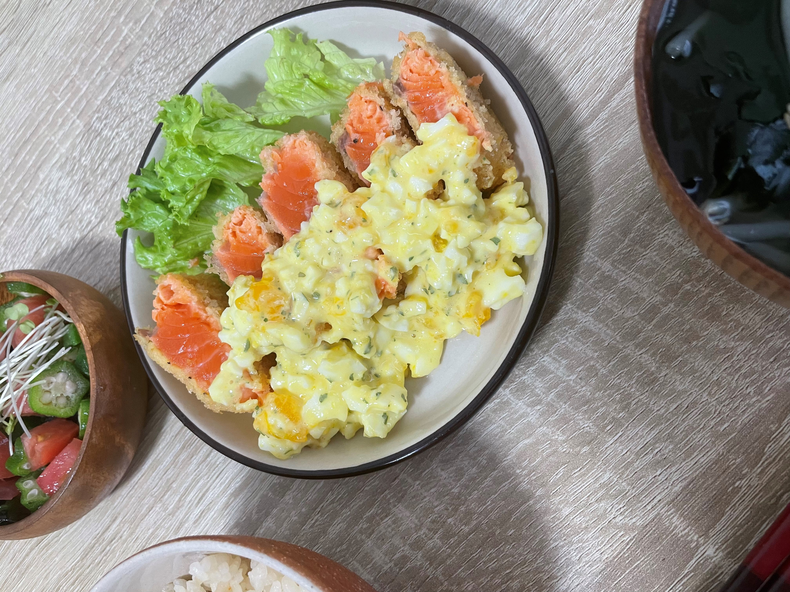
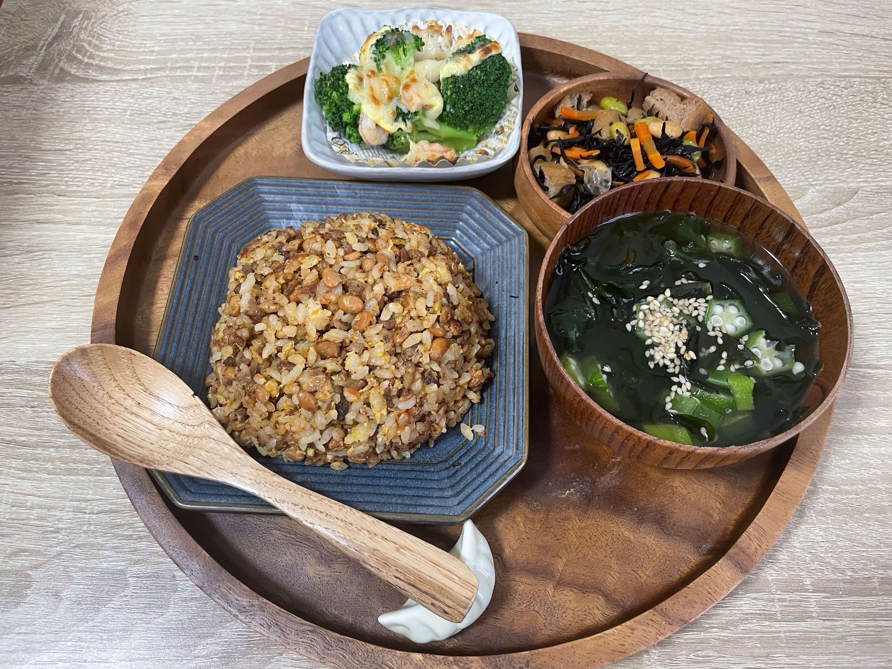
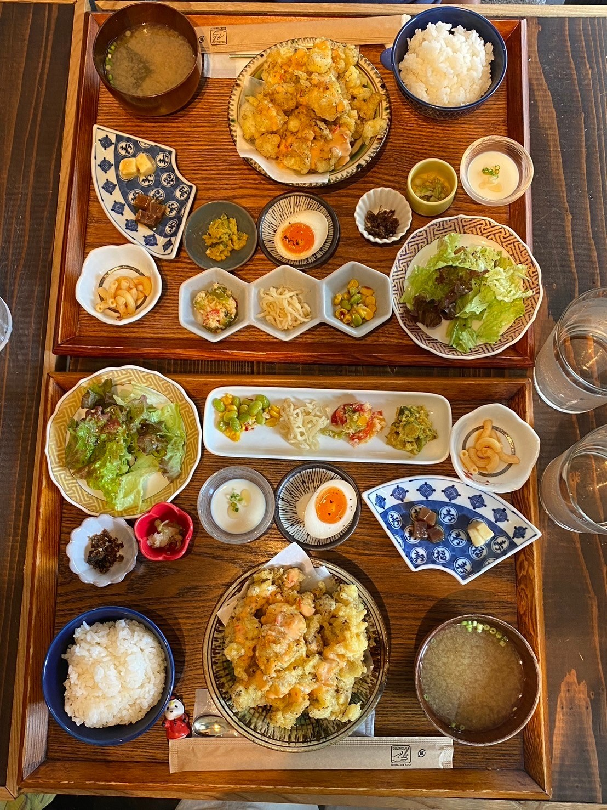
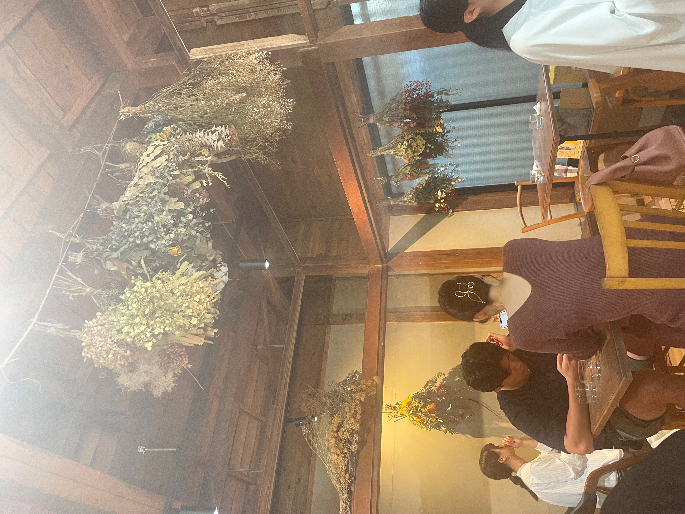
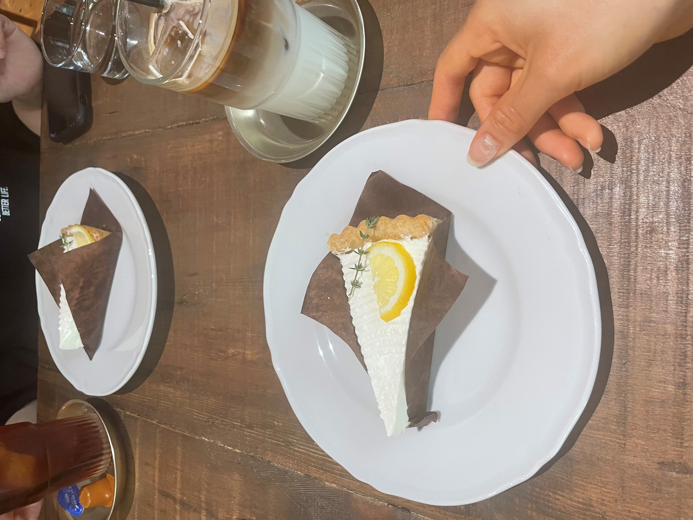

私の休日の過ごし方
①料理
普段は寮食の提供がありますが、食事提供のないオフの日は、料理をしてリフレッシュしています！
最近は、パン作りやお菓子作りにもはまっています。
写真は、最近作ったベーグルです。中に焼き芋やミートソースを巻き込んでボリューム満点のベーグルができました🥯
ほかにも、メロンパンを作ったり、キャロットケーキを焼いたりします🍰
みんなの「おいしい」と喜んで食べてくれる姿を想像しながら作るのはとても楽しいです(^▽^)/
もっといろんな料理に挑戦してみたいなと思います！！

焼き芋クリームチーズベーグル

サーモンレアカツ

ある日の夕食
②カフェ巡り
休日は友達とInstagramで見つけたカフェに行くことも楽しみの一つです！
素敵な空間でゆっくりおしゃべりをしながら、一週間の疲れを癒します（笑）
私がおすすめするカフェをいくつか紹介します！！
pololi食堂とpihakopi（吉祥寺）
吉祥寺駅から徒歩4分のところにある体に優しいおいしい手作り定食とこだわり珈琲の食堂カフェ。
定食は唐揚げやポークソテー、海鮮かき揚げなどのメインに小鉢が10品ついてきます。
料理は、どれも完成度が高く心も身体も満腹に♡
店内は木の温もりが感じられる居心地抜群のカフェです！

cafe uwaito（浦和）
浦和駅から徒歩10分程度のところにある古民家カフェ。
ランチのオムライスやケーキ、タルトなどが人気です！
ひっそりした場所にあるため、日常の騒がしさを忘れ、くつろぐことができます。

